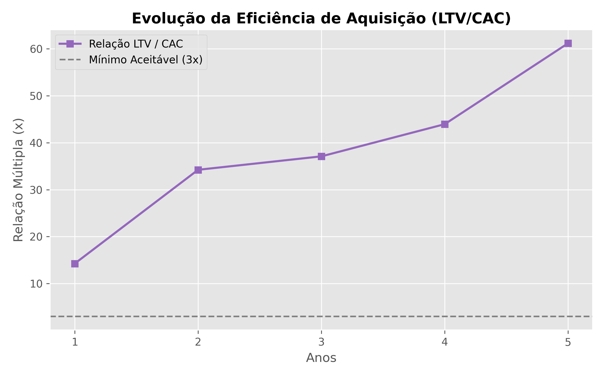
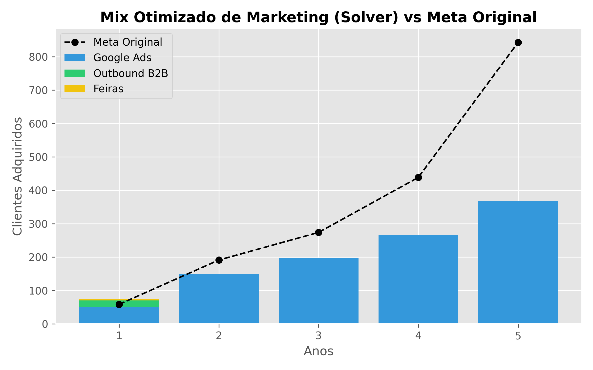
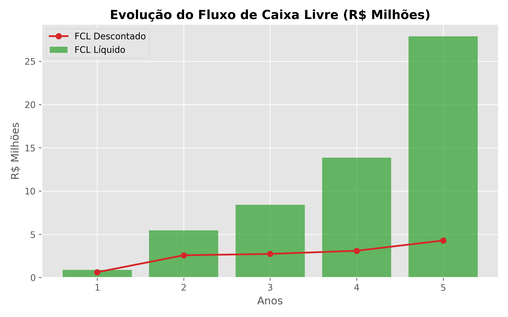
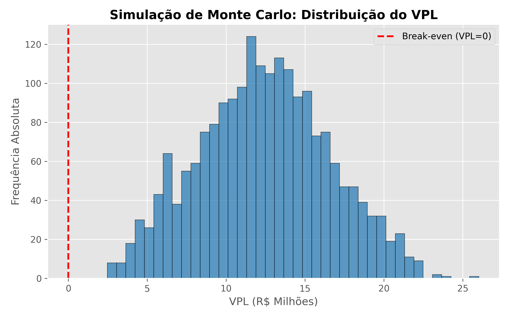

Análise Institucional e Viabilidade de Risco
(Seed Stage Model)
A cadeia de suprimentos da construção é um ambiente de alta fricção e extrema ineficiência.
O modelo não subestima o risco operacional da tese.
* Mercado resiliente. Uma fatia milimétrica do setor é suficiente para sustentar a operação.
Com conversão de apenas 5%, o CAC atinge até R$ 15.000. Contudo, a alta margem do Ticket defende a eficiência do capital.

A otimização linear atesta que a verba restrita de marketing (40% do OPEX) suporta a meta, sendo desafiada apenas a partir do Ano 4.

O Investimento de R$ 705 Mil cobre 6 meses de inoperância comercial e queima do OPEX inicial.

O rigor matemático expõe a atratividade do ativo:
Como o projeto sobrevive a tantas premissas punitivas?
2.000 iterações variando Conversão (2% a 8%) e Custo de Capital (Até 70% a.a).

Projeto Aprovado e Blindado.
Mesmo drenando as premissas com bypass de 50%, gateway de pagamento corroendo receita e gargalo comercial severo (5% Conv.), o modelo gera Caixa Livre persistente e sustentável.
A assimetria entre as despesas limitadas do software (*Asset Light*) contra a profundidade financeira colossal do setor construtivo faz do projeto uma tese elegível para Captação Privada.